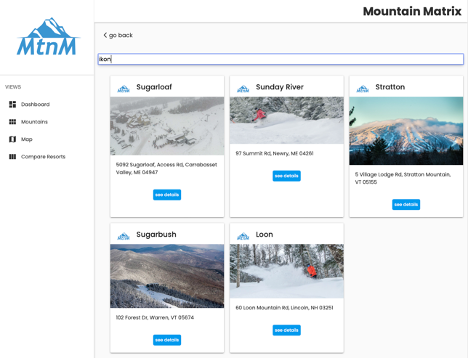
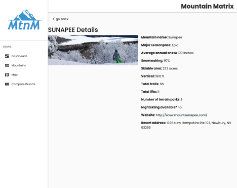
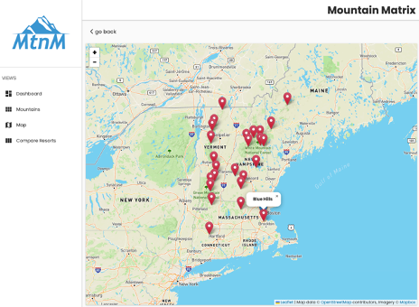
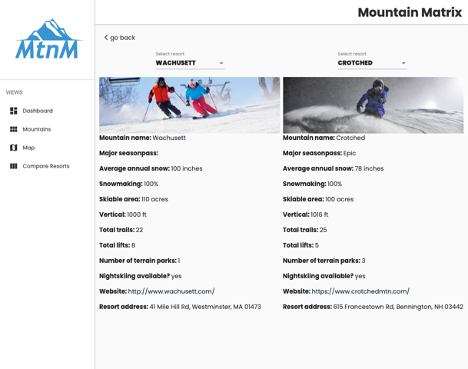
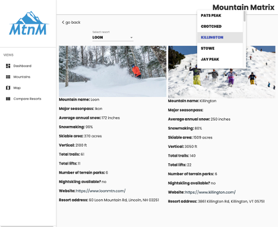

This project was my introducton to Angular. The goal was to design different views for users to compare ski resort mountains stats
to choose which resort to go to on a particular day.
I designed the logo with Adobe Illustrator and created four different pages.
Dashboard / homepage of Mountain Matrix app

View to see all mountains and search for mountains. This used ng2-search-filter, a pipe, to search the data from user input.

Individual Mountain detail view.

Map view of ski resorts in the north east region.

This view is used to compare two mountains' data points.

The selectable mountains are populated dynamically.